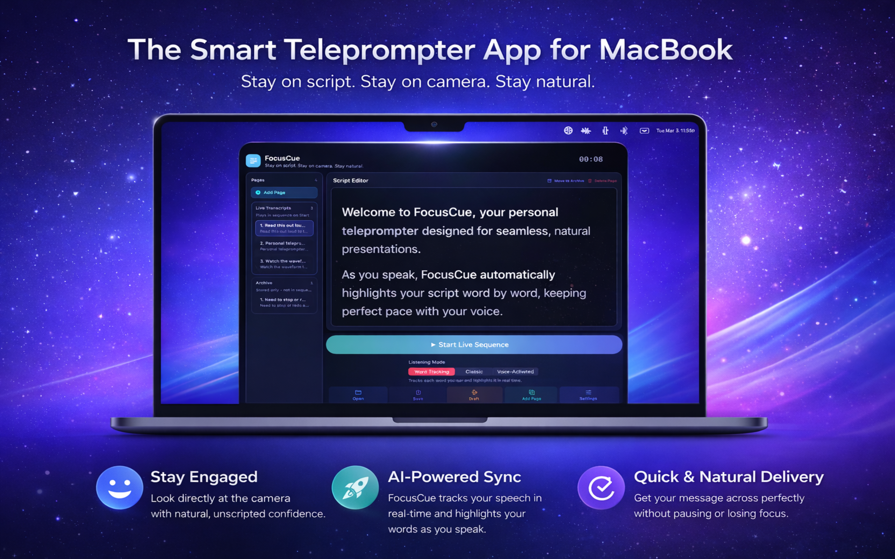
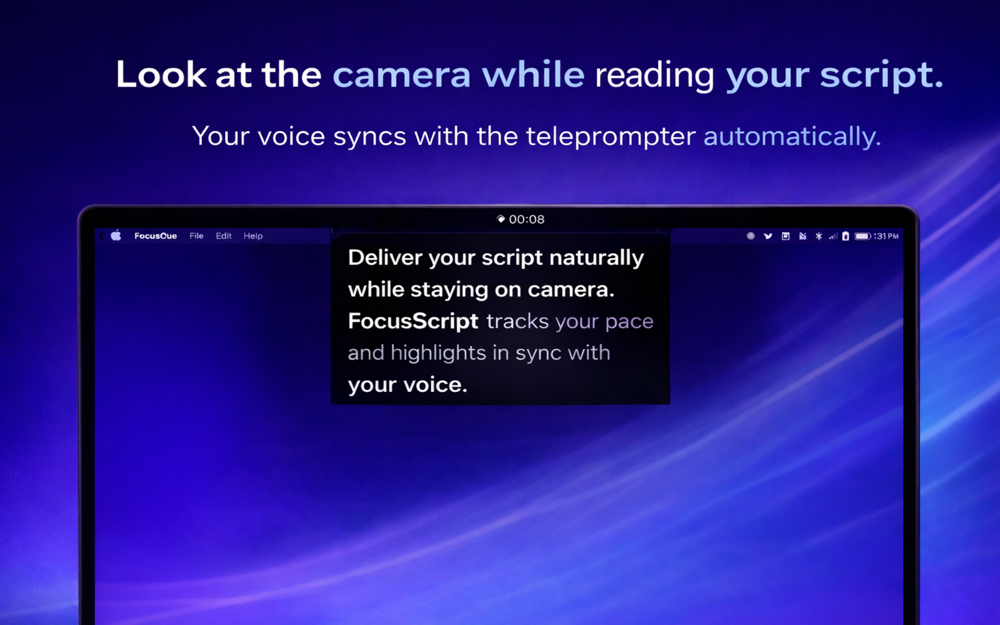
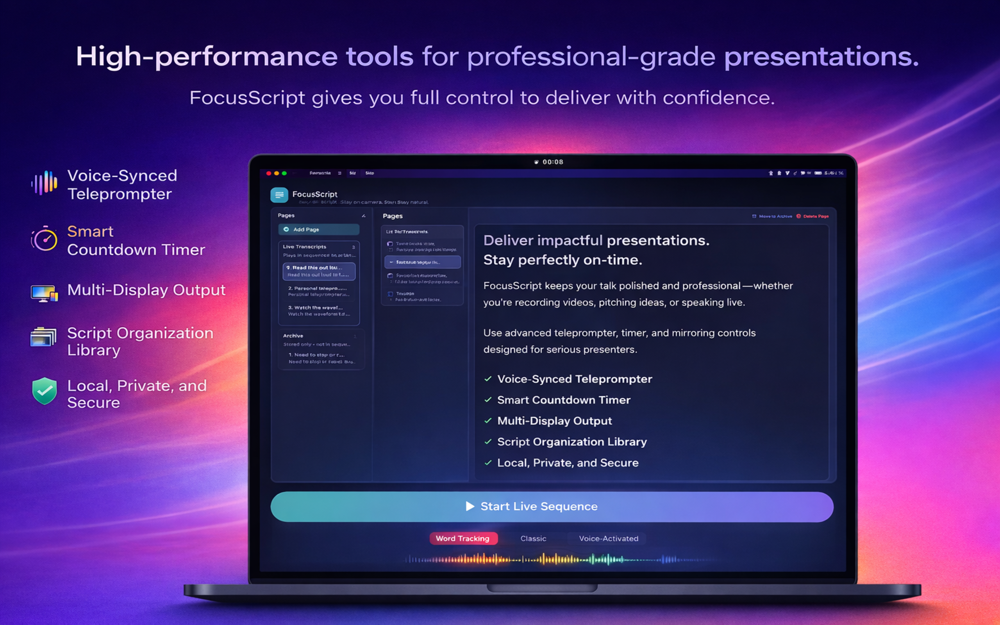
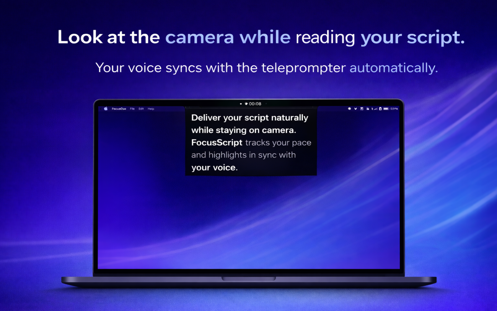
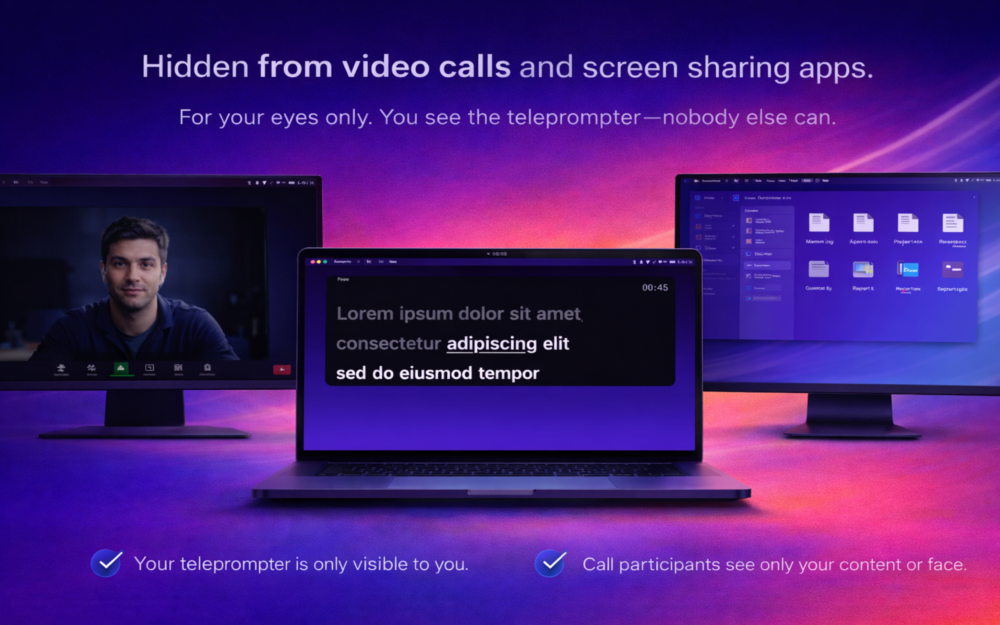
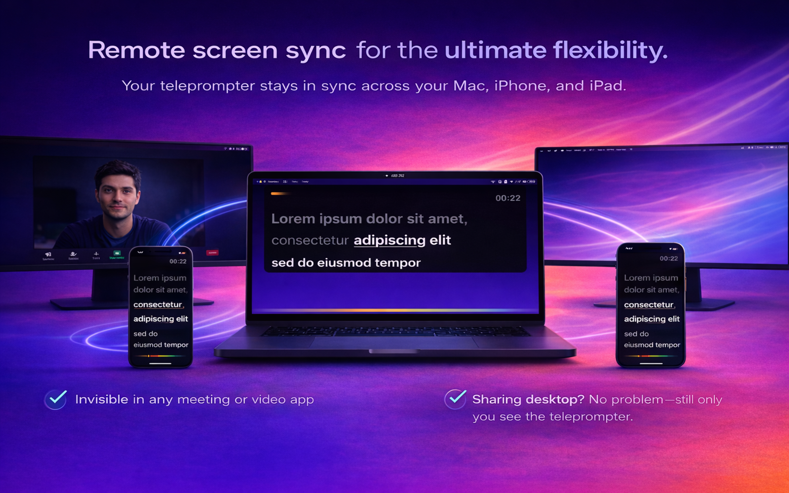
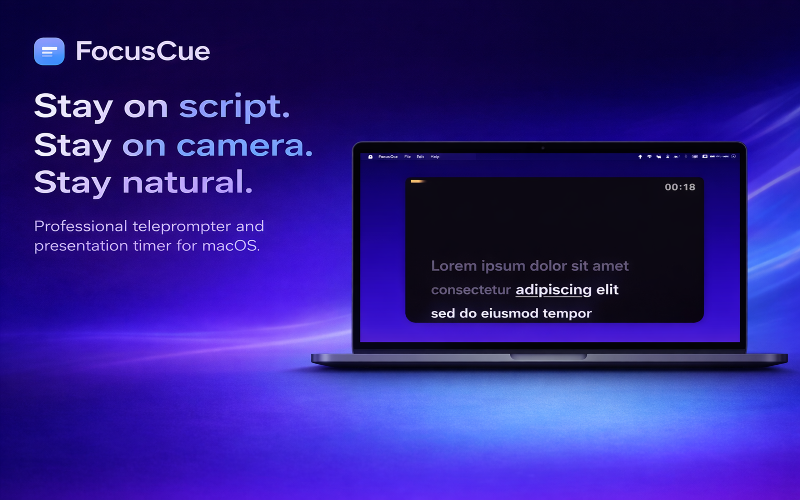
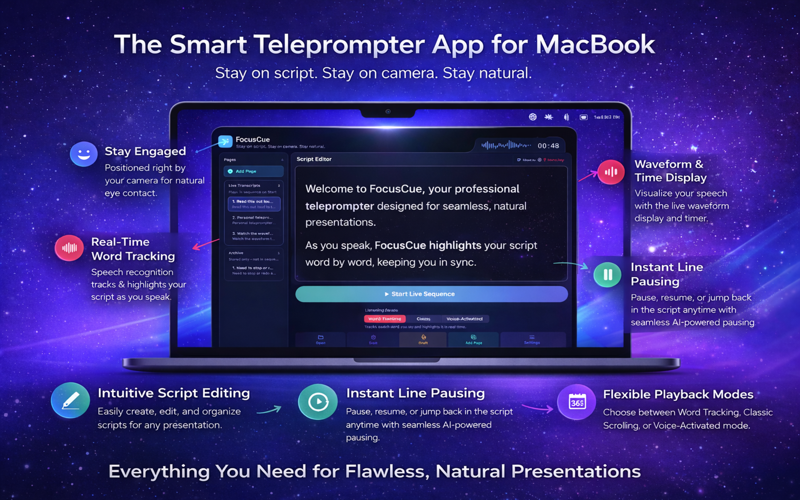

Voice-Synced Teleprompter
Follow your delivery with speech-aware progression that keeps your script aligned with your speaking pace.
App Store Ready Marketing Page
FocusCue is a premium macOS teleprompter workspace built for live calls, recordings, demos, and professional presentations. Keep your script close to the camera, follow your natural pace, and deliver with confidence without breaking eye contact.

Product Proof
FocusCue combines speech-aware reading, multi-display output, and calm on-screen presentation controls so your delivery stays precise, natural, and professional from first line to final close.

Your teleprompter stays close to your eyeline while voice-aware guidance keeps the read smooth.

Premium visuals anchored in the real app interface and current FocusCue branding.
Feature Highlights
Every feature below maps directly to FocusCue’s shipped product capabilities for real macOS presentation workflows.
Follow your delivery with speech-aware progression that keeps your script aligned with your speaking pace.
Highlight words in real time to make long-form reads easier to follow and easier to recover mid-sentence.
Stay on time with countdown guidance, clean pacing cues, and playback modes built for structured delivery.
Drive notch, floating, fullscreen, and external-display surfaces from one workspace without breaking flow.
Mirror live teleprompter state to local-network browser views on iPhone, iPad, or another display.
Your scripts stay on your Mac by default, with optional cloud features enabled only when you choose them.
Product Views
Selected FocusCue-branded screenshots from the current product experience, covering camera-first delivery, private workflows, and flexible remote viewing.

Designed for natural eye contact on live calls, webinars, tutorials, and recordings.

Built for supported workflows where you need to stay on message without exposing your prompt.

Extend your setup with browser-based companion viewing on other devices on the same network.
More Product Detail
Additional FocusCue product screens highlighting clean script visibility, multi-mode playback, and a workspace designed for fast preparation before you go live.

Readable overlays stay close to the camera so you can deliver more naturally.

Use clean pacing cues and voice-aware flow to keep your delivery on track.
Supported Platforms
FocusCue is a macOS app with browser-based remote companion viewing for iPhone and iPad over your local network.
The core FocusCue experience runs natively on Mac for camera-adjacent prompting, editing, and playback control.
Use browser output on iPhone and iPad over local network for flexible monitoring and supporting display setups.
Privacy & Security
Support
FocusCue support covers setup, permissions, playback modes, browser remote output, and launch availability questions. You do not need an account to get help.
Launch Availability
This page is the public marketing destination for the upcoming App Store listing. The App Store button is intentionally not linked yet so the page stays review-safe and avoids sending visitors to a broken URL before the listing is live.
To hear when FocusCue is available on the Mac App Store, use the waitlist link below.
Get launch updates